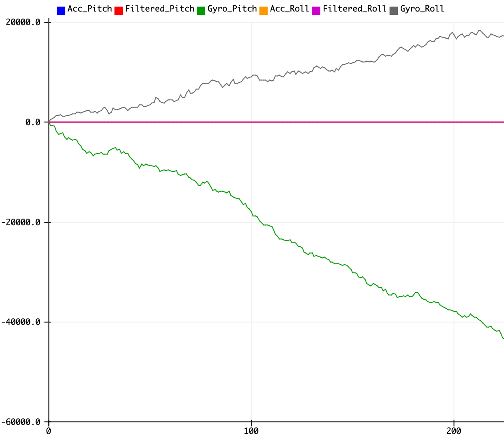
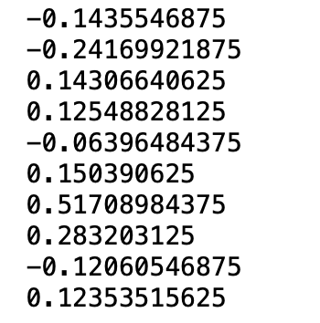
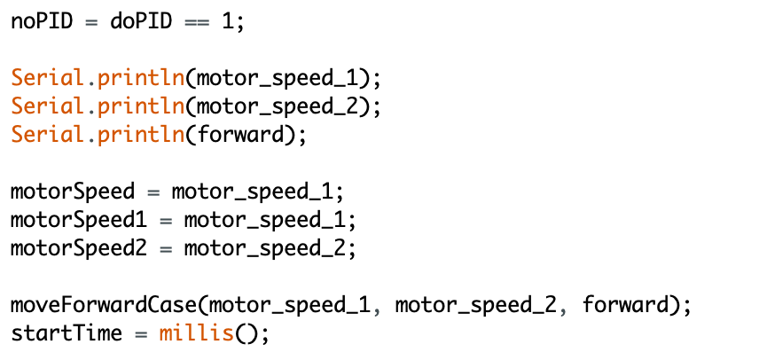
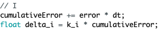
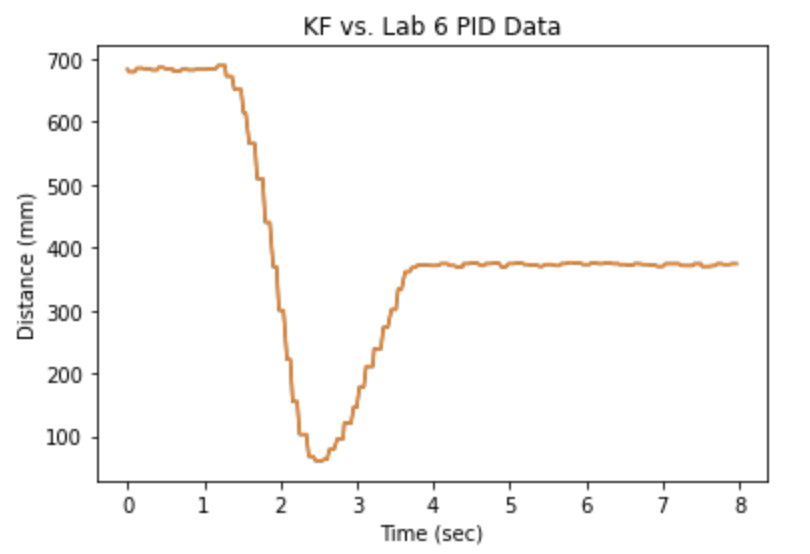

Computer Engineer - Software Engineer - Data Scientist
Labs
Lab 1
Lab 2
Lab 3
Lab 4
Lab 5
Lab 6
Lab 7
Lab 8
Lab 9
Lab 10
Lab 11
Lab 12
About
Hi, I'm Ronin! I'm an early-admit ECE MEng student at Cornell University. I am interested
in machine learning, cloud computing, and embedded systems. In my free time, I enjoy
playing badminton and tennis.
The purpose of this lab was to get familiar with the Artemis Nano board. I used the Arduino IDE to program
the board to perform simple actions such as blink, display the internal temperature, and detect certain frequencies.
This lab provided a solid refresher of using the Arduino IDE to develop simple programs that performed basic tasks.
Materials
Artemis Nano
USB C-to-C Cable
Setup
The first part of the lab involved setting up the Arduino IDE to program the
Artemis Nano. I had to install the Arduino Core for Apollo3. I used the IDE's
Board's Manager to install the Apollo3 Board Package. Then, I was able to select
this board within the IDE and upload code to it.
On-Board LED
The first program I uploaded to the board was a blink program (taken from the IDE's examples),
which utilized the on-board LED. The program made the LED turn on for one second,
turn off for one second, and continually repeated this pattern. Even though this
program was very simple, it helped to verify that I had installed the correct board package
and that I could correctly upload code to the board. Below is a video of the LED
blinking.
Serial Monitor
The next part of the lab involved verifying that the Serial port works. Just like the blink code,
I used one of the example code files. This program simply printed text to the serial monitor. It
also allowed the user to enter text, and the program echoed that text back to the user. This simple
script allowed me to verify that the Serial port/monitor were working correctly, which is a good
sanity check since I will be using it frequently for debugging. Below is a video of the example code
running.
Temperature Measurement
The fourth part of the lab involved measuring the internal temperature of the Artemis Nano. The microcontroller
has an Analog-to-Digital converter to aid with this measurement. I experimented with varying the internal
temperature by pressing onto the chip. The video below shows the interal temperature gradually increasing
as a result of this action.
Frequency Measurement
The fifth part of the lab involved measuring frequency using the on-board pulse density microphone. I used the
example program that performed Fast Fourier Transform and identified the highest frequency. The video below shows
the resulting frequency of ambient noise, followed by a 500 Hz signal being played.
Whistle Detection
The last part of the lab involved turning on the on-board LED when I whistled, and turning the LED off when I stopped
whistling. I modified the frequency measurement example code to achieve this behavior. First, I initialized variables
for the lowest and highest frequencies of my whistle. I used the previous program to detect what these frequencies were.
As the code snippet below indicates, if a frequency was within this range, I turned on the LED, otherwise I turned it off.
Lastly, I called this function within the main loop after the frequency was calculated, as shown below.
The video below shows an example of the LED turning on with a whistle and subsequently turning off when the whistle ends.
Lab 2: Bluetooth
Overview
The purpose of this lab was to setup a Bluetooth connection between the Artemis Nano and my computer. I used the
Arduino IDE to trasmit data wirelessly from the Artemis Nano to my computer, and Jupyter Lab to develop Python
code to transmit data wirelessly from my computer to the Artemis Nano. I was able to send basic messages
and commands to the Artemis Nano as well as receive simple responses. This lab provided a solid overview of
Bluetooth Low Energy.
Materials
Artemis Nano
USB C-to-C Cable
Bluetooth 4.0 Low Energy Micro Adaptor
Setup
The first part of the lab involved setting up the Python environment and the Artemis Nano.
Computer Setup
First, I ensured that I had Python 3.9 installed along with a pip (Python package manager) version
of at least 21.0. Next, I setup a virtual environment for this lab. This allowed me to maintain the correct
versions for this lab's Python packages, and helped ensure they didn't conflict with other packages
I had installed. After activating the virtual environment, I installed the following packages using pip:
numpy, pyyaml, colorama, nest_asyncio, bleak, jupyterlab. Lastly, I downloaded the Lab 2 Codebase
from Cornell Box and verified that I was able to start the Jupyter server.
Artemis Nano Setup
I had to install the ArduinoBLE library, and used the IDE's library manager to do this. I ran the provided code
to obtain the Artemis Nano's MAC address, which can be seen below.
I had to use this MAC address as a final configuration step for BLE. The provided Python code had a
connection.yaml file, which had a field for the Artemis Nano's MAC address. I replaced
this field's value with the MAC address displayed by the serial monitor. After doing this, I was able to
connect to the Artemis Nano from my computer, and the serial monitor verified this connection.
ECHO Command
This first lab task was the ECHO command. This command involved sending a message from my computer
to the Artemis Nano and having the Nano respond with an augmented message. For example, my computer
could send Hello and the Nano respond would respond with Received Message: Hello. The
provided lab code had functions for sending the command and processing the response, so I only had to implement
the code on the Arduino side to receive the command and send the response. The ArduinoBLE library and provided
lab code helped initiate this process. It had the logic for decoding the command and extracting the message (as a string).
I added the logic for constructing and sending the response. As shown in the image below, I had to clear the transmission
string, add the appropriate text, which was the augmented string, and finally write this string to the BLE string characteristic.
The two images below show the Python code and output response as well as the Arduino's serial monitor output, which indicate
that this command works correctly.
SEND_THREE_FLOATS Command
The second lab task was the SEND_THREE_FLOATS command, and this was slightly simpler than the previous command.
It only entailed sending three floats from my computer to the Artemis Board, and printing these values to the serial
monitor. The implementation, as show below, was nearly identical to the previous command. However, the values were floats
instead of strings, and I didn't have to construct a response message.
The two images below show the Python code for sending the command and the serial monitor output ensuring that
the command functioned correctly.
Notification Handler
The next part of the lab involved setting up a notification handler to receive floats sent by the Artemis board. For the
previous command, I would have to explicitly check if the Artemis board sent a response, which can become fairly tedious. The handler
(shown below) took a GATT characteristic's uuid and received data value as inputs, and simply updated a global variable to be this
value and then printed it out and returned it.
Lastly, I started the nofications by binding the float GATT characteristic to the handler function, as shown below. I had to use the
stop_notify function, which was provided, to stop the notifications.
These values make sense, since as long as the connection exists, the Artemis Nano Board is incrementing the float value by 0.5
and then sending it (as shown by the two code segments below).
Different Data Transmission Methods
The function requirements are based on their names, so receive_float() requires a float and receive_string()
requires a string. To receive a float value in Python, nothing needs to be done if receive_float() is used, but type
conversion from string to float is required if receive_string() is used. Additionally, a string, which is comprised
of characters, requires more bits than floats. As a result, larger values and more precise values can be used by receive_float
compared to receive_string.
Additionally, the implementations of the two functions differ as receive_float() uses the float GATT Characteristic while
receive_string() uses the C-String GATT Characteristic. They also use different functions to parse the data. Specifically,
receive_float() uses the unpack() method from the struct module on the byte array, while receive_string()
uses the byte array object's decode() method.
Effective Data Rate
The next part of the lab involved calculating the effective data rate. I used the ECHO command to send
a message from my computer to the Artemis board and then used the receive_string() method
to obtain the response sent from the Artemis board to my computer. I used Python's time
module to collect the time before sending the message, collect the time after receiving the message, and
then calculated the elapsed time by taking the difference. I used Python's getsizeof() function
to obtain the number of bytes in the two messages, and then calculated the data rate by dividing the total
message size by the time elapsed. I calculated the data rate for four different messages of various sizes, and
for each message I averaged the results from ten trials. The image below contains the Python code for this part.
I used Python's matplotlib module to plot the results, as shown below. As the data size increased,
the data rate also generally increased. There was a slight decrease from 117 to 125 bytes, but this is most likely
an outlier or negligible. I believe the trend indicates that the setup overhead dominates at smaller data sizes, and
similarly doesn't have a major effect at the larger data sizes.
Reliability
The last part of the lab involved determined the reliability of the Artemis Nano. I utilized the float
notification handler I wrote previously to perform this task. The provided Arduino code
sent a float every time the timer exceeded a value, specified by the variable interval. The larger
this variable, the longer the time between successive floats. I attempted to exceed the data rates I calculated
in the previous part of the lab by significantly decreasing the value of interval. I started by making it
10, then 1, then 0.0001, but the notification handler kept reading every value, which
included consecutive increments of 0.5, and this was surprising to me since I expected some data to be dropped.
Even when I set interval to 0, no data was dropped, which indicated that the Artemis Nano is very reliable.
The image below shows the receiver (computer) output when interval is set to 0. As I mentioned previously,
I utilized the notification handler again and disabled it after two seconds to limit the output.
Lab 3: Sensors
Overview
The purpose of this lab was to add two types of sensors to the robot: Time-of-Flight (ToF) Sensor
and Inertial Measurement Unit (IMU). I connected these sensors to the Artemis Nano Board and verified
that they were connected properly by running basic scripts. I developed more complicated scripts to
calibrate and test many features of both sensors. By the end of the lab, I had a robot with
fully-functional ToF sensors and an IMU.
Materials
Artemis Nano
USB C-to-C Cable
Two 4m Time-of-Flight Distance Sensors
9DOF Inertial Measurement Unit Sensor
Qwiic Connector
Ruler
Prelab
Prior to the lab, I researched the two types of sensors. I skimmed both of their manuals and datasheets.
I also planned out some of the sensor integration aspects. I decided to use permanent soldered connections
for both sensors to ensure that the sensors remain available throughout the high accelerations. I planned
out the wire lengths as well. I planned to have one ToF sensor in the front of the robot, one of the side, and
the IMU near the back of the robot to limit electromagnetic interference.
Time-of-Flight Sensors
Setup
First, I soldered one sensor and connected it to the Artemis Nano by using the Qwiic Connector, which
connected directly to the Artemis. Then I daisy-chained a second ToF sensor. For the second sensor, I also
had to utilize the XSHUT pin. Since I'm connecting two identical sensors on the same I2C bus, their addresses
are the same. I had to use the XSHUT pin to shut one sensor down and restart it with a different address.
The final wiring is depicted below.
Next, I had to install the SparkFun VL53L1x 4m Laser Distance Sensor library using the Arduino
IDE's library manager.
Sensor Experimentation
As I mentioned previously, I had to change the address of one of the ToF sensors. I turned one sensor off,
but forcing its XSHUT pin low, then I changed the address for the sensor still on by using the
setI2CAddress() function, and then I wrote a digital high to the XSHUT pin to turn the other
sensor back on. The code snippet below reflects these actions.
I ran the example I2C Wire code to check if the I2C channel address matched what I expected. However, instead of
the two sensor addresses being printed, all addresses were printed. This is a problem we established in lab, so I
used other scripts to check if the sensors were working.
Instead, I used the read distance example. As the name suggests, this script displays the distance detected by one
ToF sensor. Since I had already added the second sensor and changed the address, all I had to add was the logic
for obtaining the distance for it and displaying it. I utilized the same code that was provided and modified it
to reference the second sensor object. Below is the code modification and the output of the serial monitor showing
both sensors operating correctly.
Next, I explored the three distance modes (short, medium, and long) that the ToF sensor has. The short distance
mode is good for sensing immediate obstacles. However, if there's the occasional larger distance that needs to
be detected, this mode would cause a problem since it wouldn't be able to detect it (it has a max of 1.3m).
The long distance mode is good for checking that there is a lot of open space in front of the robot. It might
not be as helpful if there are abrupt close obstacles since this would lead to fluctuations in close and far distance
sensing. This mode is also more error prone when there are inconsistencies in the surrounding environment. The medium
distance mode should be the happy middle of the previous two modes. A slight disadvantage is that it's not specialized
in short or long distances. Ultimately, I chose the short distance mode for the robot because I believe we will mainly want
to detect nearby obstacles. Given the size of the robot, this mode will create a large sensing area around the robot.
The code snippet below shows how I set the distance mode for both sensors.
Then, I tested the accuracy of this distance mode. For each measurement, I averaged 25 values and used millis()
to find the average ranging time. The images below include the graph and the code used to generate that graph. The blue line
represents sensor 1, the orange line represents sensor 2, and the green line represents the line y = x. Overall,
the sensors weren't too far off and measured distances were fairly close to what I expected.
I experimented with different surfaces. When I used the sensor on different colors and other flat surfaces (wood, cloth),
the accuracy didn't change significantly. Even when I used it to detect uneven/bumpy surfaces (small pile of objects,
crumpled up paper), the values still ended up being fairly consistent. This demonstrates that these sensors are fairly
robust.
Infrared Transmission
The ToF sensors utilize laser pulses to measure distances. Infrared distance sensors measure the reflected infrared (IR) light,
and then use it to estimate the location of an object. Specifically, the angles of reflected beams are analyzed.
There are active and passive IR sensors. Active sensors are able to emit and detect IR radiation, while passive sensors
are only able to detect IR radiation. If I was to use an IR distance sensor on the robot, I would use an active IR sensor
so that I could detect any type of obstacles, since it isn't common for objects to emit significant IR radiation.
Generally, IR distance sensors are faily small and are capable of measuring distances to complex surfaces and objects.
One problem with infrared sensors is that the light conditions can significantly affect the performance of the sensor.
Timing Budget
I experimented with the timing budget of the ToF sensor. I used the manual to identify functions I could use to modify
the timing budget. I noticed the most notable changes when I used the function setTimingBudgetInMs().
This function set the time needed to perform one measurement. A larger value means less frequent measurements, but
even when I tried larger values, I didn't notice any significant changes in my distance calculations.
When I set it to the minimum (20 ms), I was able to more than halve the ranging time (shown below).
The images below include the code snippet to modify the timing budget and the observed results.
"Signal and Sigma"
The last aspect of the ToF sensors that I analyzed was their "signal and sigma" parameters. These parameters specify if
the sensor's readings are valid, which allowed me to discard invalid measurements. I used the minimum timing budget
(20 ms) with the short distance mode, and abruptly changing the distance to an object didn't impact the range
status (it remained good). However, the signal rate did fluctuate after these changes. The video below reflects these
trials.
At the end of the video, the range status changed because the distance exceeded the maximum 1.3m of this mode, which was a
result of me trying to push the fluctuation limits (practically 0.0m to 1.3m). I was surprised
by this behavior since I expected rapid fluctuations to cause the signal to fail, at least occasionally. I'll have to check
this again prior too completing future lab tasks, and possibly increase the timing budget accordingly.
Inertial Measurement Unit
Setup
First, I soldered the IMU's connections, which were also daisy chained to the previous ToF sensors. The soldered sensor is depicted
below.
Then, I installed the appropriate Arduino library: SparkFun 9DOF IMU Breakout - ICM 20948. I ran the same provided code
to display the sensor's I2C address, but this just printed all addresses since multiple sensors were connected.
I ran the basic example which displayed various sensor values. I modified the script and set AD0_VAL to 0 because the ADR
jumper is closed. By default, the ADR jumper is open, which requires this value to be 1, but that doesn't work correctly for my circuit
since the ADR jumper is closed. The video below shows the changes based on accelerations in the x, y, and z directions, respectively.
Rotating the IMU about each axis increased the Gyroscope's values for that sensor. I added a one second delay between each display
to make it easier to analyze the changes on the serial monitor output.
Accelerometer
Next, I used the accelerometer data to compute pitch and roll. I used the formulas from lecture and focused on the output values
at -90, 0, and 90 degrees for pitch and roll. The image below shows the code used to perform this calculation.
The images below show the output calculations for pitch at -90, 0, and 90 degree angles, respectively.
The images below show the output calculations for roll at -90, 0, and 90 degree angles, respectively.
For both pitch and roll, the expected values were -1.57 (-pi/2), 0, and 1.57 (pi/2), which is fairly
close to the computed values. The maximum error is 0.20, which is less than 15% error.
Then, I plotted the frequency response as a result of tapping on the sensor. I referenced this
resource for example Python code.
I updated the Arduino code to print out the pitch and time values.
Then, I loaded this data into Python and performed FFT.
Below are the resulting time domain and frequency response plots, respectively.
The goal of this analysis was to identify a cutoff frequency for the low-pass filter to help eliminate noise.
A higher cutoff frequency implies that rapid movements above the high frequency should not affect the pitch values.
The frequency response plot didn't reflect a lot of noise readings, so I just used a cutoff frequency of 50 Hz since
my future measurements will likely not be greater than 50 Hz. The code snippet below shows the calculation of the
alpha value (0.4652) for the filter (based on the formulas in the lecture slides).
When the complimentary low pass filter utilized the calculated alpha value of 0.4652 it didn't have
much of an impact on the results as the plots from the serial plotter looked fairly similar. The blue and green
lines are the acceleration values calculated from the accelerometer, and the red and orange lines are the filtered values.
However, using an alpha value of 0.14 did have an impact. The new plot showed that the pitch and roll values
calculated from the accelerometer were sensitive to taps at t = 125, t = 175, but the filtered values were
not.
Gyroscope
Next, I used the gyroscope data to compute pitch, roll, and yaw. Again, I used the formulas from lecture to perform these
calculations. The gyroscope calculated pitch and roll values were significantly different from the accelerometer's calculated
values and the low pass filtered values. The outputs of the Gyroscope's calculations are below.
In the plot above, the green and grey lines are the Gyroscope readings. They tend to drift away from zero. I experimented
with lowering the sampling frequency by a factor of ten, and this made the error even worse.

Next, I tried to improve the accuracy and stablility of the pitch and roll values by implementing a complimentary filter.
For this filter, I started with the sampe alpha value as the one I used for the acceleration filter (0.14),
since it worked well for that. I also reverted back to the original sampling frequency, which was the sampling frequency
that had the least error for the originial gyroscope calculations. This resulted in less drift, with the fluctuations in
the middle of the plot a result of rapid rotations.
Magnetometer
The last part of the lab involved using the magnetometer. I converted the data from the magnetomer into yaw angle by using
the formulas presented in lecture. The image below shows sample output data.
I noticed some interesting trends in the sensor data. The magnetometer's data didn't fluctuate a lot. Its values would
change after time intervals, and sometimes remain constant for a substantial period of time. I attempted to find
the magnetic north, at which one component should be zero and another component should be at a maximum. The graph
below plots the output data while I attempted to find magnetic north.
In the graph, one component's magnitude is somewhat close to 0 and another is around 35 mT. As I varied the pitch,
the magnetometer's values didn't change significantly. Overall, I expected to see more fluctuations in the data, but
this is the output I observed from the IMU.
Lab 4: Characterize Your Car
Overview
The purpose of this lab was to understand the capabilities of the RC car. I performed the necessary
steps to power the Artemis Nano Board with a battery. Then I performed simple measurements and more
complicated experimental analyses to learn about the car's abilities and limitations.
Materials
Artemis Nano
USB C-to-C Cable
Battery Packs (600mAh and 850 mAh)
2mm JST Connector
RC Car
Artemis Nano Setup
First, I setup the Artemis Nano to be battery powered. This allowed me to use the Artemis untethered to my computer.
I soldered the 600mAh battery's connector to the 2mm JST connector, which fit into the Artemis. I was able to charge the
battery by connecting the Artemis to my computer by using the USB C-to-C cable.
Simple Measurements
I started by measuring the dimensions of the car. The complete dimensions are 18 cm x 14.5 cm x 8 cm. The diameter of the wheel
is 8.5 cm. Here are images of the top and bottom of the car.
When using the ToF sensors in future labs, I may want to identify the location of the robot. Ideally, I'd want to
know the center of the robot. However, the ToF sensors will not be located at the center of the robot, and instead one will be
on the front and the other will be on the side. By measuring the dimension of the robot, for the front ToF sensor, I can add the
distance detected to half of the length of the car. Similarly, for the side ToF sensor, I can add the distance detected to half
of the width of the car. The IMU's accelerometer will be used to calculate distance traveled, so using that data in addition to
these measurements will allow me to pinpoint the center of the robot.
I also measured the small compartment on the car which will be used to store some components such as the Artemis Nano Board, which
is depicted below.
I can probably keep some components in addition to the Artemis Board in the compartment, and can use this measurement to plan
which components will fit. The dimensions of the compartment were 6.5 cm x 3.5 cm x 2.5 cm. However, I plan to keep the top
open so the height of this compartment doesn't matter.
Lastly, I measured the battery life time. This will allow me to plan for future labs, since I will know how long I can operate the
robot without needing to change the battery. I experimented with five batteries, and the life times were between 8-9 minutes.
Experimental Analyses
Collaborator: Chris Chan
Straight Line Movement
In future labs, the robot will be moving a lot. I believe one important aspect will be to keep the robot as straight as possible
when it is moving forward. I will end up using PID to help with this, but I wanted to assess how straight the robot moves on its
own. I tested moving the car straight on two surfaces: a carpet and a couch. I tried to pick fairly extreme types of surfaces
to stress test the car's movement. It moved fairly straight on the carpet, with some slight angular movements, but it was much
more angled on the couch. Hopefully I'll be able to use better surfaces for the later labs, but PID will also help with straightening
out the motion.
Turning Mechanism
Next, I explored how well the car can turn around its own axis. When it detects obstacles in future labs, it will definitely
need to maneuver around them. For instance, an obstacle can suddenly appear, and the robot will need to immediately turn to
avoid it. For this reason, I wanted to check how fast and reliable the car can turn. The two videos below show the robot turning
on two different surfaces.
In both scenarios, the robot does move while turning, and this is much more apparent in the carpet turning as compared to the table turning.
However, I don't believe this will be a big problem because I don't believe the robot will need to replicate this action. It may need to perform a
180 degree turn, but it will not need to consistently turn for an elongated period of time. As a result, the apparent drift from continuously
turning shouldn't be a problem moving forward.
Car Stunts/Tricks
Ramp
Next, I wanted to test how well I can operate the car manually. This allowed me to understand the "upper limit" of what the robot will be
able to do. It also allowed me to think about the commands the Artemis will need to perform these types of actions. Overall, I learned
that it is fairly simple to have the robot do tricks, since they only require a few combinations of commands (forward/backward and vice versa).
I started by seeing if I could drive the car up a fairly steep incline. I used wooden planks with velcro to create the incline. I tried this
several times but didn't have a ton of success. Usually, the car would make it up part of the ramp, but then it would fall off the side of the
ramp. The following two videos show failed attempts to get to the top of the ramp.
Eventually, I was able to get the robot to the top of the ramp.
Flips
Next, I experimented with getting the robot to flip. I was able to do this fairly easily. I moved the robot forward and
then quickly flipped the direction, which caused it to flip. The video below demonstrates this behavior.
I also tried to get the car to land on its side following a flip. I achieved this by moving the robot forward, then quickly
changing directions, and then I quickly turned the robot slightly to the right. This didn't always work since sometimes the
robot would just fall over. The video below demonstrates a working example of the robot ending up on its side.
The video below shows a full suite of stunts.
Launching Distance
Lastly, I measured the maximum launching distance of the car. I started the car at the edge of a circular table and then launched
it towards a couch. The table had a larger height than the couch. Here are the distances and heights of the setup.
Height of table: 70 cm
Diameter of the table (distance traveled by the car): 118 cm
Height of the couch: 46 cm
The image below depicts the car at the edge of the table prior to the launch.
I tested various distances to identify how far the car could travel. The four videos below show the success at covering 76 and 78 cm, along
with the failure to cover 80 and 82 cm, respectively.
I wanted to test this because I didn't have a lot of success with driving the car up a ramp. Even though this wasn't the same,
this allowed me to learn more about manually operating the car. Even though I probably won't directly use this information
in later labs, it was a lot of fun to see how far the car could travel.
Lab 5: Open Loop Control
Overview
The purpose of this lab was to setup open loop control of the RC car. I performed the necessary steps
to move the car using signals sent by the Artemis board. I was able to make the car move in a straight
line as well as perform simple turns.
Materials
Artemis Nano
USB C-to-C Cable
Battery Packs (600mAh and 850mAh)
2 dual motor drivers
RC Car
Setup
In the previous lab, I demonstrated that I could manually control the RC car. In this lab, I had to modify
the car to allow the Artemis board to control it. One of the primary considerations was the speed of the
car, hence the course name: Fast Robots. To increase the speed of the car, I parallel coupled each
motor driver. This allowed me to double the amount of current delivered to the motor. I had to use PWM pins
on the Artemis board to control the motor drivers. I referenced the pinout diagrams
here to determine which
pins support PWM on the Artemis Nano. Based on the motor driver's documentation, which can be found
here, I decided to hook up the motor drivers
as shown below.
I had to solder the majority of the connections. I also had to disassemble some parts of the RC car. Specifically,
I removed the blue shell, chassis LEDs, and control PCB. Lastly, I mounted all components on the car (sensors,
motor drivers, Artemis Nano). The images below depict everything assembled.
Basic Motor Operation
To test the operation of the motors, I placed the car on its side and experimented with running the motor in
both directions. The code snippet below shows how I initialized the motor driver's PWM pins, and used analogWrite
to write the PWM signal values.
The two videos below show the expected functionality of the wheels turning in both directions.
Then, I expanded this to two motors. I initialized the additional two PWM pins, as shown by the code snippet below.
Similar to before, I had to initialize the additional pins, as shown below.
I then replicated the analogWrite code for the second motor, as shown below.
Basic Car Motion
Lower Limit of the Motor
Next, I determined the lowest PWM signal I could send to the motor drivers such that the robot still moved on the
ground. I simply varied the PWM value written to pins A2, A3, A14, and A16. I tested moving
the robot on a flat table with a similar amount of friction to the lab floor. I discovered that the lowest PWM signal
at which the robot was still able to move was 40. The video below shows the robot moving at this speed.
Straight Line Motion
Next, I made the robot move in a straight line. I had to use different PWM values to achieve straight line motion. Specifically,
I had to offset the two motors' PWM values by 5. The code snippet below depicts this logic.
The video below shows the robot moving in a straight line for 2m.
Simple Turning Motion
Next, I experimented with making the robot perform basic turns. This allowed me to verify that the robot is capable of turning.
I separated the turning logic into different functions, as shown in this code snippet.
I used the delay function to specify the turning angles (longer delays imply larger angles).
The video below shows the robot performing these turns.
Frequency Generation
According to the Arduino website, analogWrite
produces a PWM signal with a frequency of 490 Hz. During my tests, I observed that rapid changes to the PWM signal values
are not precisely reflected by the motors. The motor driver's datasheet indicates that each motor driver's max PWM frequency is
50 kHz. This indicates that I could increase the PWM frequency up to 10x its current value. However, I don't believe the
motors will necessarily respond to such a drastic increase since the analog PWM signal is still just an average.
Speed Ramp Up/Down
The last part of the lab involving slowly increasing and decreasing the robot's speed, and using the attached sensors to calculate the
speed. I used Bluetooth to send commands to the robot as well as transmit sensor data back to my laptop. The two images below show the
Python ramp up and ramp down code, respectively. This wirelessly instructed the robot to move forward at the specified speed, and then
obtained the robot's velocity (acceleration * time) from the IMU.
The following two snippets show the Arduino code. Based on the direction provided, I wrote the appropriate values to each PWM pin.
The images below show the outputs of three unique trials. The last trial only includes the ramp up logic. I didn't want to move the robot too fast,
so the fastest speed I achieved was 0.5171 m/s.

The videos below show the three trials.
Lab 6: Closed-Loop Control (PID)
Overview
The purpose of this lab was to implement PID control. I improved upon the BLE protocol
I used in lab 2 to make debugging much easier. Incrementally, I fine-tuned my PID
control based on the system requirements and ultimately got it working for slower
speeds. I will continue to improve it over the next two labs.
Materials
Artemis Nano
USB C-to-C Cable
Battery Packs (600mAh and 850mAh)
2 dual motor drivers
ToF sensor
RC Car
BLE Protocol Improvement
I started by improving the BLE protocol that I had used in lab two. This made debugging and performing simple tasks, such as
adjusting the location of the robot, much easier. I had to generate additional uuids and create more characteristics, since I
was going to be trasmitting more data using bluetooth.
Then, I updated the robot control class provided. I implemented functions that
would automatically store sensor values using a notification handler, update the fields that stored these values, and explicitly obtain
sensor values.
For all of these functions, I had corresponding Arduino code that performed the task. The two images below show example functions called
to obtain sensor values.
Additionally, I created functions to control the robot. I created a function to move the robot forward. I wanted to be able to use
this function for multiple tasks, so I added in arguments for speed, direction, and whether the robot should perform PID
while moving.
On the Arduino side, I set variables accordingly, when this command was run, as depicted in the first image below. Then, this
would call another function which set the values of the PWM pins based on the direction, as shown in the second image.

I also added in a function to stop the robot. I frequently used this command to avoid crashing into walls.
Similar to the move forward situation, I implemented essentially the same logic on the Arduino side. The only difference
was the function called and the values written to the PWM pins.
I also created a function for updating the PID constants. This allowed me to easily experiment with changing the values of the
constants as well as the setpoint.
Task Overview
I chose to work on Task A: Don't Hit the Wall. The goal was to drive the robot fast in the direction of a wall and then stop
when the robot is 300 mm from the wall. I relied on my front ToF sensor to determine the distance to the wall.
For my PID controller, I needed to define the setpoint and error. Since the objective was to have the robot stop at 300 mm,
I chose a setpoint of 300. I defined the error as Front ToF Sensor Reading - Setpoint.
When I implemented any PID controller, my general workflow included calculating the respective value, setting the motor speed to the value,
writing that value to the BLE characteristic, and lastly writing that value to the PWM pins. The following three images show these steps.
Initial Proportional Controller
I started simple by implementing a P controller. Thus, I set the motor value to k_p * error, where k_p was
the proportional constant.
From the previous lab, the minimum PWM signal was 30. Additionally, I capped the signal at 150 since I didn't want the
robot to go too fast while I was tuning the controller. Since the ultimate stunt will require 2 meters, the maximum error is 1700 (mm).
Since the smallest PWM signal is 30, the smallest value of k_p = 30 / 1700 = 0.018. Theoretically, the optimal k_p could be
fairly large since the error might be small and the maximum PWM signal that I allowed was 150. After performing some basic tests with
k_p values between 0.05 and 0.8, I realized that this sped the robot up very quickly and it was not able to
adequately recover and would end up hitting the wall. The plot and video below show this behavior.
At low speeds, the simple P controller worked fine. I used k_p = 0.05 and a starting motor value of 50.
At the higher speeds, if the robot didn't crash into the wall, it's momentum typically carried it closer to the wall. The plot and
video below shows an example of this.
Proportional-Integral Controller
Next, I added in an integral term to see how much it would improve the controller. Overall, it worked rather poorly since
it mainly just compounded the previous problem.

This term accumulates the error for each time step. As a result, as the robot was far away from the setpoint, the
error was large, which made the cumulative error large, which significantly increased the motor speeds. This just made it more
likely for the robot to overshoot the setpoint. I experimented with using small values for k_i = (0.0001-0.1), but they
still resulted in the robot overshooting the setpoint.
Proportional-Derivative Controller
I implemented a PD controller to help prevent the robot from hitting the wall. As the name suggests, the derivative term accounts for the rate
of change of the error. Specifically, I stored the previous error and compared that to the current error. If the error was decreasing, which was
indicated by current error - previous error < 0, then this reduced the speed of the motors, since it meant that we were getting closer
to the setpoint. On the other hand, if the error was increasing, then the speed of the motors increased, with the goal of getting closer to the
setpoint.
While observing my initial P and PI controllers, I noticed that the robot was frequently hitting into the wall. This was especially noticeable when
I used a larger starting speed or started farther away from the wall, which resulted in the robot reaching a larger maximum speed. The fundamental problem
was that the robot didn't stop fast enough once it reached the setpoint.
As a result, I thought that I would need a fairly large p_d constant, so that I could rapidly account for when the robot approached the
setpoint and preemptively slow down the motors before the robot reached the setpoint.
I performed three trials, and two worked somewhat well. For each trial, I set the starting motor speed to 75. For the first trial (depicted below),
I set p_k = 0.30 and p_d = 0.80. This resulted in the robot hitting into the wall. As a result, I reduced both p_k and
p_d with the hopes of making the robot slow down more before the setpoint.
For the second trial (depicted below), I set p_k = 0.20 and p_d = 0.70. This worked better, but once the
robot passed the setpoint, it wasn't able to move back. Specifically, the PWM signals were too small for it to move backwards. I
increased the constants to try to combat this.
For the third trial (depicted below), I set p_k = 0.25 and p_d = 0.75. This trial also worked, but similar
to the previous trial, the robot didn't make it back to the setpoint. It did reach a larger top speed with this trial, since I increased
the p_k constant.
Proportional-Integral-Derivative Controller
Lastly, I combined everything to improve the controller. From my previous analysis, I knew that I wanted the integral term
to be small, so I experimented with extremely small values (<0.0001). I used similar constants for
the proportional and derivative terms, but after experimentation settled on k_p = 0.35, k_i = 0.00001, and
k_d = 0.75. I have included three successful runs below. For each trial, the starting motor value was 75
and the setpoint was 300.
Overall, I was able to achieve a maximum speed of 1.44 m/s. I hope to improve on this during the next
two labs as I develop a better controller.
Other Considerations
Deadband and Max PWM Signal Thresholding
I had to account for deadband. From the previous lab, I found that PWM signals below 30 barely run on the floor (carpet where I
did most of my testing). On the other hand, I had to limit the max PWM signal that I sent to the motors since I didn't want the
robot to crash during testing.
Sampling Frequency
I didn't have a problem with the default sampling frequency so I didn't change it. I removed unnecessary Serial.println()
statements from the code to avoid reducing the sampling frequency. In the next labs, I may increase the sampling frequency as I attempt
to make the robot move faster.
Backwards Movement
In my initial implementations, I solely made the robot go forward and then stop when it reached the setpoint. As I discussed previously,
this frequently resulted in the robot crashing into the wall. I had implemented this feature by setting the motor value to 30
if the new value was less than 30. This forced negative values to 30, which still moved the robot forward. I updated logic by
analyzing the sign of the error. If error > 0, then the robot hadn't reached the setpoint yet, so I continued moving the robot
forward. On the other hand, if error < 0, then the robot had reached and passed the setpoint, so I flipped the diirection variable
and made the robot move backward.
"Hacks"
The main "hack" I used was stopping the robot when it was 50 mm away from the setpoint when moving forward and 10 mm away
when moving backwards. I did this to "help" the PID controller. I was more conservative when moving backwards since the typical backwards speeds
were smaller, so the robot had less momentum while moving backwards.
Lab 7: Kalman Filters
Overview
The purpose of this lab was to implement a Kalman Filter. This allowed me to increase the speed of the robot as it
approached the wall since I no longer had to solely rely on the front ToF sensor, which samples fairly slowly.
Materials
Artemis Nano
USB C-to-C Cable
Battery Packs (600mAh and 850mAh)
ToF sensor
RC Car
Step Response
I first executed a step response by keeping the robot stationary from the wall, then driving it at a constant
PWM signal towards the wall until it reached steady state, and lastly stopping the robot. I had to choose the step-size. In
the previous PID lab, I computed the PWM value by using my PID controller. The PWM value was generally between 30 and
130, so I chose the midpoint, 80, to be my step-size. I issued the appropriate commands over bluetooth (start collecting
data values, move the robot with a PWM value of 80, stop the robot, stop collecting data values). I used the PING
command to toggle between collecting and not collecting data values.
The following graphs display the ToF sensor output, calculated velocities from this distance data, and motor PWM input.
I used these graphs to measure the steady state speed and 90% rise time (t_90). I used the velocity graph
to determine the steady state speed. The initial spike in velocity around 4 seconds was when the robot started
moving. It reached steady state a little bit after 6 seconds, at which the speed was approximately constant at
2000 mm/s. I calculated 90% of this speed and determined how long it took for the robot
to reach this speed, starting from the time of the initial spike (when the robot started moving). I analyzed the graph
and determined this time to be 2.5339 seconds. Based on the examples from lecture, my A matrix was
[ [ 0, 1], [0, -d/m] ], where d = 1 / (steady state speed) and
m = (-d * t_90) / ln(1 - 0.9). This resulted in [ [0,1], [0, -0.9087] ] for the A matrix. My
B matrix was [ [0], [1/m] ], which resulted in [ [0], [1817.4489] ].
Kalman Filter: Setup
The first step in setting up the Kalman Filter was creating the process and sensor noise covariance matrices. I estimated
the sensor variance and approximate levels of noise. One covariance matrix was for the process noise, which represented
my trust in the modeled position and speed. For instance, the first element in this matrix corresponded to how far off
the ToF sensor measurement is anticipated to be per second. I estimated this value to be 100 mm. The second element
corrresponded to how far off the speed will be and I estimated this value to be 100 mm/s. I chose these values
to be larger than what I expected, so that I could simply reduce these values slowly as I made the robot move faster.
The second covariance matrix was for the measurement noise, and it represented how much I trust the sensor data.
Specifically, larger values indicate that there is more sensor error. For this matrix, I chose a value of 20 since I mostly
trusted the sensor values (the main problem was the slow sampling rate). I modified all of these values after implementing
the Kalman Filter on the robot.
Then, I created the C matrix. My state space had one state and two dimensions. The one state was measuring the distance
to the wall. The two dimensions were distance to the wall and PWM motor value. As a result, my C matrix was
[ [1, 0] ] , since my distance to the wall was greater than 0 (at least initially) and the
starting PWM value was 0.
Kalman Filter: Sanity Check
Before implementing the Kalman Filter on the Artemis, I tested it on data I recorded from the previous lab. I initialized
the state vector to [ [Starting ToF Value, 0] ] since the robot started that far from the wall and was
stationary. Next, I had to discretize my A and B matrices since I was running the Kalman Filter on pre-recorded data.
I used the following two equations: Ad = np.eye(2) + Delta_T * A and Bd = Delta_t * B, which
were provided.
I adapted the provided code to perform the Kalman Filter on data (ToF reading, motor PWM value) at one point in time.
I had to loop through all of the previous data, and call this function for every datapoint. Since I used the step response to
general some of the KF parameters, I had to scale down the PWM motor value so that it was in the range [0, 1].
The plots below depict the output for my initial covariance matrices.
I experimented with these matrices to ensure the KF changed as I expected it to. First, I used the covariance matrix values I stated
above, which are also displayed below, to assess the performance of the Kalman Filter. In the graph below, the blue line
represents the ToF sensor outputs and the orange line represents the KF output. The KF matched the sensor outputs fairly closely.
I repeated this process but used a larger value for the process noise covariance matrix, which placed less trust in the
model and more trust in the sensor values, and as a result the KF followed the sensor values much more closely.

I repeated this process again but used larger values for the measurement noise covariance matrix, which implied that the
sensor measurements have more error and placed less trust in the sensor values, and as a result the KF followed the sensor
values less closely.
Kalman Filter: Artemis Nano Implementation
Now that I had finished testing my KF using old data, I proceeded to implement it on the Artemis. It was the same as my
Python implementation, just using a different language. I used the
BasicLinearAlgebra library to implement the KF on my robot. The following code snippet shows the
parameters that I initialized prior to the actual run.
The following snippet shows the KF function that ran at every time step. When there was a new sensor value, I incorporated that value
into the KF and performed the update step; otherwise, I didn't perform the update step and simply used the KF output in the PID controller.
I modified my PID logic to incorporate the output of this function. The main difference was that I used the function's output,
instead of the front ToF sensor reading, to determine the error.
The following videos and images show the outputs of three runs. For each run, I kept the PID coefficients the same
(P = 0.05, I = 0, D = 0.75), and only
varied the process noise covariance matrix value. The values I used were 1000, 1500, and 1000, respectively.
I varied this parameter to assess the impact of following the front
ToF's sensor values more closely. The blue line depicts the KF output and the red dots are the front ToF sensor outputs.
The KF did help since the ToF sensor is so slow, but I still need to fine tune the matrices based on the lab floor since I
did most of my tests on a carpet. I was able to reduce the oscillations about the setpoint, which were very prevalent in
previous labs.
Lab 8: Stunts
Overview
The purpose of this lab was to combine the PID control from lab 6 with the Kalman Filter implementation from
lab 7 to perform fast stunts. I was able to perform the controlled stunt (Don't Hit the Wall) as well as
some open loop repeatable stunts. I had to make several adjustments to account for the performance of my
ToF sensors.
Materials
Artemis Nano
USB C-to-C Cable
Battery Packs (600mAh and 850mAh)
ToF sensor
RC Car
Controlled Stunt: Don't Hit the Wall
The goal of this stunt was to drive the robot very fast towards the wall, perform a flip when the robot
was approximately 0.5 m from the wall, and then drive the robot very fast past its initial
position.
First, I updated my Kalman Filter implementation. Initially, I always performed the prediction and update
steps, as shown below.
I updated this logic to only perform both steps when the robot received a new sensor reading from the front
ToF sensor. I only ran the prediction step based on the motor PWM signal and KF model when I didn't have a new
sensor reading. The code snippets below reflect these changes. I used the default value of -1000
for the front ToF sensor reading, and then updated that value if there was a new value.
I varied my PID and Kalman Filter parameters to adjust for the higher robot speed. However, I faced several problems
with my front ToF sensor. I rarely got a consistent reading, even in cases when the robot wasn't moving. I experimented
with varying the distance mode and integration time, but neither improved the sensor reading reliability. I verified that
this problem persisted across multiple surfaces. Regardless of the parameters I set, the sensor rarely detected distances
above 700 mm, which was a major problem since the starting distance was about 2000 mm.
After many attempts, I got a somewhat acceptable attempt. However, the robot angled after performing the flip. Part
of the reason for this was because of my unreliable front ToF sensor.
The image below shows the front ToF sensor readings for this run.
Since this wasn't perfect, I also did "bang-bang" control instead of relying on the front ToF sensor. I started
by moving the robot at full speed towards the wall. When it reached the sticky matt, I sent the command over
bluetooth to initiate the flip. This command consisted of moving all four wheels in the opposite direction at
max speed for a short period of time and then stopping. Lastly, I made the robot move forward (in this
opposite direction) at full speed. The image below shows these commands.
I adjusted the PWM input values, the starting angle, and the starting distance. I also cleaned the wheels
of the robot. Ultimately, I was able to get a successful run that worked fairly well.
The plots below show the ToF readings (red dots) and KF values (blue line) in the first plot,
and motor PWM values in the second plot for the stunt. I stopped measuring the ToF readings after
the robot got close to the wall, which is why the ToF readings don't increase near the again back
up to 2000 mm. Even though I ended up using "bang-bang" control, my Arduino code still
performed PID whenever it received a new ToF value. After the robot got close to the wall and performed
the flip, I didn't want it to perform PID anymore and just return back to the starting line as fast
as possible.
Open Loop, Repeatable Stunts
Spin!
The next stunt involved making the robot spin in place. I picked this stunt in preparation
for lab 9. Here are the control commands I sent to the robot.
Turn CCW (for 2 seconds)
Stop
Turn CW (for 2 secconds)
Stop
Draw a T!
The next stunt involved making the robot draw the letter T. Here are the control commands
I sent to the robot.
Move forward (for 0.5 seconds)
Turn left (for 0.35 seconds)
Move forward (for 0.5 seconds)
Turn left (for 0.5 seconds)
Move forward (for 0.75 seconds)
Stop
Double Flip
The last stunt I worked on was a double flip. The involved making the robot flip once (as I had
done before), then move in the opposite direction for some time and flip again. I didn't end up
completing this task for the well-being of my robot. While testing this stunt, the robot kept
hitting into walls, and I started to worry about its structural integrity, especially since I still
needed to use the ToF sensors and IMU in later labs. I may come back and redo this stunt at the end of
the semester.
Bloopers
Robot vs. Individual
Individuals can easily outrun the robot moving at max speed.
Robot vs. Individual + Tricycle
Individuals can not easily outrun the robot when also steering a tricycle.
Lab 9: Mapping
Overview
The purpose of this lab was to generate a map of a rectangular region of the lab. I placed
my robot in five locations within the region and used the robot's front ToF sensor to obtain
distance measurements at several different orientations. I combined all of these readings to
create the map. Lastly, I converted the distance data points to a line-based map which I compared
with the actual reegion to determine the accuracy of my approach and measurements. I will use
this line-based map in the future localization and navigation labs.
Materials
Artemis Nano
USB C-to-C Cable
Battery Packs (600mAh and 850mAh)
ToF sensor
IMU
RC Car
PID Control
When obtaining the distance measurements from the ToF sensor, I had to rotate the robot on its own axis. This
allowed me to calculate multiple data points at each location within the rectangular region, and thus reduce the total
number of locations. Ideally, the robot would rotate by a fixed amount for each turn, since this would result in the
best map after using transformation matrices to combine all readings.
I used PID to rotate the robot for a fixed turn amount. I utilized a simple P controller where the setpoint was the
angle that the robot had to turn through. I used 20 degrees as my setpoint, since that allowed me to obtain
18 measurements per full rotation. As a result, I defined the error as the difference between the elapsed turned
angle and the setpoint. I determined the elapsed turn angle by comparing the current integrated gyroscope value with the previous
integrated gyroscope value. When the elapsed turn angle was within 2 degrees, I made the robot stop moving. To
limit sudden starts and stops, I made the robot wait a specified interval of time before it started turning again. I included
the relevant code snippet below.
After each 20 degree turn, I wrote the front ToF sensor's distance measurement and integrated gyroscope value to their
respective float characteristics.
The video below shows the robot successfully turning fairly well on axis.
The plot below shows the output gyroscope values for P = 0.25.
The plot below shows the turn angle for each turn.
Overall, the robot did not turn exactly 20 degrees every time, but it was fairly close (+/- 5 degrees).
The video below shows the robot turning on the lab floor. Unfortunately, it did move while turning which will impact my final
map.
On average, the robot's orientation changes by 17 degrees during a single measurement. The maximum error would
occur if I registered the front ToF sensor's value at a 90 degree orientation instead of at the expected
~73 degrees. I will discuss this later, but the error in the computed x-position would be
2000 mm * 1 - cos(90-73) = 87 mm (2000 mm since the robot will start centered). However,
this assumes that my ToF sensors operate fairly well, which is not the case. On average, my ToF sensors are off by
100 mm, so the theoretical max error should be 187 mm. My robot also doesn't turn on axis incredibly
reliably and moves by approximately 200 mm per full rotation, increasing the max error to 387 mm.
The average error should be smaller than this, but it probably won't be the case.
Read Out Distances
I placed my robot at each of the 5 marked locations in the lab and used my PID controller to
make it rotate in 20 degree increments for 45 seconds. I specified this amount of
time to ensure that the robot would complete more than one rotation, since it stopped momentarily after each
turn. I ended up only using the datapoints from the first rotation. I sent the start PID command, which
started the turning, over bluetooth.
Plot Readings
I plotted the integrated gyroscope values and ToF distance sensor values in a polar plot, as shown below.
I used the individual plots to verify that I obtained readings at roughly 20
degree increments. I analyzed individual plots after each run to ensure that the angle
measurements line up with what I observed while watching the robot turn.
Merge Data
Lastly, I combined the sensor data from all of the individual locations to construct the map. For each data
point, I had the sensor value (r) and the corresponding angle (thetha). I had to
convert each of these datapoints to x, y coordinates. I used the formulas x = r * cos(thetha)
and y = r * sin(thetha), based on transformation matrices. I also had to adjust for the different
locations. The lab had each location mapped as follows.
These values represent tile coordinates. Each tile was 300 mm, so I simply multiplied the tile coordinates
by 300. I added these deltas to the previous values. Specifcally, x_final = r * cos(thetha) +
tile_x * 300 and y_final = r * sin(thetha) + tile_y * 300. The last step in converting the measurements
to the inertial reference frame of the room was accounting for the ToF sensor's placement on the robot. The robot rotated
about its center, and the sensor was mounted 90 mm from the center, so I subtracted 90 from each x
measurement. Finally, x_final = r * cos(thetha) + tile_x * 300 - 90.
I iterated over every data point and performed this calculation to convert it to x, y coordinates, as depicted in the
snippet below.
Now that I had all the x, y coordinates, I plotted them, stratified by location. I added in the lines representing the outlines
for the boundary and obstacles. I obtained the positions for these lines from the lab 10 repository (pink). The cyan borders represent the
boundaries that I determined experimentally from my ToF data. I included the two boundary point lists below the graph. The first list (boundary)
consists of the points I added and the second list (world) consists of the points provided in the lab 10 setup.
Overall, my sensor values weren't perfect. Part of this is because the robot didn't perfectly spin on axis. The plot shows the best run as
the previous runs were much worse. Another reason for the poor readings is the inconsistency of my front ToF sensor. As I mentioned in my
lab 8 wiki, sometimes it simply can't detect values greater than 600 mm, regardless of the distance mode, and sometimes
it consistently detects values too large, regardless of the integration time. Generally, I was able to detect the box near the center of
the space, and was somewhat able to detect the box near the boundary. The gyroscope values would also drift over time so that could have
contributed to errors in the computed angles.
Lab 10: Simulator
Overview
The purpose of this lab was to setup and get familiar with the robot simulation environment.
I was able to perform all setup steps and run the simulator effectively to control the virtual
robot to perform simple objectives along with obstacle avoidance.
Materials
Laptop
Setup
Upgrade Python version to 3.10
Upgrade pip version to 21.0
Delete and recreate virtual environment using the updated
Python version
The simulation environment includes a simulator and plotter for controlling the virtual robot. The
virtual robot has a laser range finder, which functions very similarly to the ToF sensors on
my robot. There is a GUI that can be used to start, stop, and reset both the simulator and plotter.
This can also be done programmatically by using the following functions: START_SIM(), START_PLOTTER(),
STOP_SIM(), STOP_PLOTTER(), RESET_SIM(), RESET_PLOTTER().
Simulator
The simulator records the ground truth of the robot, which is the actual position of the robot. It also
uses the sensors to estimate changes in position over time. Specifically, these changes are integrated over
time to predict the location of the robot. The simulator provides this odometry pose estimate.
There are functions to set the linear and angular velocity of the virtual robot, get the odoometry and
ground truth of the virtual robot, get the distance sensor data of the virtual robot, and reset the position
and orientation of the virtual robot to its initial state.
Plotter
The plotter tool plots the ground truth and odometry poses.
There are functions to plot points in the plotter in red, green, or blue, plot a map (sequence of points),
and reset the plotter.
Open Loop Control
The main open loop control task that I performed was making the virtual robot execute a "square"
loop. I issued the velocity command for 1 second intervals as the robot
either moved forward or turned. I used the asyncio module to wait for 1
second in between forward commands.
Simply issuing a velocity command will make the robot move
at that velocity forever, until another velocity command is sent that changes the velocity.
The videos below show multiple iterations of the robot drawing squares. The simulator and
plotter are depicted side-by-side. On the plotter on the right, the green lines represent
the ground truth and the red lines represent the calculated positions (odometry poses).
Overall, the robot did not always execute the same shape. This is because I utilized
angular speed and time duration to execute my turns. Specifically,
if I needed to turn 90 degrees, I utilized angular speed and time duration values that
multiplied to 90. However, the function required the angular speed to have units of
radians/sec. Since the units involved radians, I had to involve pi, which
resulted in some level of approximation. As a result, the computed angle wasn't always exactly
90 degrees. Since I had to compute the angle four times per square, the error
was compounded so each square was slightly further off. Additionally, I used the asyncio
module for the time duration. While this module is fairly accurate, it is not perfect, so the timing
was not always the expected amount, which further propagated the angle error.
The image below shows the ground truths for a few runs. Overall, the error angle wasn't huge, but it
was definitely noticeable. There were a few runs where the error was extremely small so it wasn't
noticeable, but this wasn't always the case.
Closed Loop Control
I used the following class to control the virtual robot.
When the virtual robot reaches an obstacle, it should keep turning until it no longer faces an
obstacle. Initially, I set this angle to 90 degrees which essentially guaranteed
that the robot would no longer face an obstacle after turning. I modified this to be a random
angle to make the robot movement nondeterministic.
I implemented the following class functions to perform obstacle avoidance.
My obstacle avoidance code works most of the time (99%). There are unique cases when the robot is moving
in a straight line near an edge, but it doesn't detect that edge. Based on my trials, these situations
are very infrequent. However, mostly happened at very high speeds. At low speeds, they rarely happened
since the robot was able to detect an obstacle in front of it. Overall, by issuing the
set_velocity commands in very short intervals, I was able to make the obstacle avoidance logic
nearly flawless. This ensures that the robot moves at very high speeds while turning prior to hitting into
a wall. Additionally, prior to moving forward, I check if the robot will hit into a wall if it was to
move forward at a specified speed for a specified time (checkSafeMovement()). This
ensures that the robot will not collide into a wall in front of it, since it will turn instead. As I mentioned
before, this works for almost every case, and solely doesn't work for the corner cases where the sensor
doesn't detect the obstale jutting out. However, tt is still possible for this to happen in slow speed cases,
as shown in the video below.
The video below shows the robot navigating faster, since I capped the speed at 25 m/s instead
of at 15 m/s.
The maximum linear speed I achieved was 6,227.8242 m/s. I achieved this by making the virtual
robot move at large speeds (and constantly increasing the speed) for very short periods of time. To achieve
this speed, I set the maximum speed constant in my class to 10,000 m/s and the time interval
between forward commands to 0.001 s. Initially I experimented with the following time intervals:
0.50 s, 0.10 s, 0.01 s, and I slowly scaled them down.
After this short period of time, I checked the distance sensor value and turned the robot if it was close
to an obstacle. This prevented it from hitting into the wall. On average, the robot should move
slower (around 5 m/s). Moving at this slower speed would make the obstacle collision
logic easier since it would be easier to control the robot at this slower speed, thus making it
easier to adjust the robot's movement.
The closest I was able to get to the wall without colliding was 0.082981 m. I determined this
value by continously moving the robot closer to the wall, for different amounts of time, and calculated the
distance to the wall at the end of each movement. I stored all the final distances in a list and obtained
the smallest one. In my robot control class, I use a slightly larger minimum distance just to give the virtual
robot some more breathing room, especially since it was moving at such high speeds.
Lab 11: Grid Localization using Bayes Filter
Collaborated with Chris Chan
Overview
The goal of this lab was to use the robot simulation environment to implement
grid localization using Bayes filter. I expanded on initial simulation work
from lab 10 and created the foundation for lab 12.
Materials
Laptop
Preliminary Work
I started by reviewing the steps needed to perform grid localization using the robot
within the lab space. The robot can be located anywhere in this space, but I simplified
the analysis by reducing the continuous state space to a discretized finite 3D grid space.
The robot's position in this space can be broken down into grid cells, and each grid cell
can be represented by (x, y, thetha). I will use the Bayes filter to compute the probability
of the robot being located in each cell. The image below depicts the entire discretized
state space.
I implemented five functions, which were all combined to perform the final grid localization.
Compute Control
The first function I completed was compute control. This helper function took in the previous
pose and the current pose as input arguments, and returned three transformations to get from
the previous pose to the current pose. The image below depicts these transformations (two
rotations and a translation).
The odometry model of the motion between two states can be constructed by the initial rotation,
then a translation, and lastly a final rotation. In the function, I first calculated the change in
x, y, and thetha between the two poses. Then I used geometry and trigonometry to calculate the three
transformations. Lastly, I had to normalize the two angular transformations to fall within the correct
range (-180 degrees to 180 degrees), and I used the provided
normalize_angle function to do so.
Odomotry Motion Model
The second function was odomotry motion model. This helper function took in the previous pose, current pose,
and control input. The control input was defined similarly to the transformations in compute control, with
two rotation parameters and one translation parameter. This function returned the probability of transitioning
from the previous pose to the current pose (previous state to current state), based on the control input. I used
the compute_control function to calculate the control input required to move from the previous
pose to the current pose. I then used the provided gaussian function to compare this control input
with the control input argument, and calculated the probability of all three transformations occurring.
Prediction Step
This function generated new probabilities that the robot was located in each grid cell. It took two
inputs: the previous and current poses from the odometry motion model. I used the compute_control
function to generate the control input (transformations) that are required to get from the previous
pose to the current pose. Then, for all of the previous dimensions and current dimensions, I used the
odom_motion_model function to calculate the probability of transitioning from the
previous pose to the current pose with the control input that I generated using compute_control.
Then, I updated the prior belief for each grid cell with these new probabilities. Lastly, I normalized all
the probabilities to ensure they summed to one.
I did not compute new probabilities for every grid cell. I checked if the previous belief's probability
was greater than 0.0001, and didn't loop over all the current dimensions if this was not the case.
This is because the new probability would be very close to 0, since the previous probability
was so small, so this function would be more efficient if I just skipped over those grid cells.
I referenced the lecture slide in the appendix to implement the prediction step of the Bayes filter.
Sensor Model
This helper function took the true observations for the current pose as an input and returned the probabilities
of the likelihoods of each observation. At each location, the robot obtained 18 equidistant
observations, since it rotated 20 degrees at each location. In the function, I looped over
the true observations and used the provided gaussian function to calculate the probability of
each observation based on the sensor values obtained from the robot and the provided sensor noise. I multiplied
all of these probabilities together to get the total probability of all observations.
Update Step
This function updated the probabilities of each grid cell based on the predicted probabilities (from
predict_step) and the computed probability for the current pose. In the function, I looped over
all of the current poses (grid cells), computed the probability for that pose using the sensor_model
function, and then multiplied that probability with the predicted probability for that grid cell, which was
stored in an attribute in the BaseLocalization object (I updated this attribute in the
predict_step function). Lastly, I normalized these probabilities so that they summed to 1.
I referenced the lecture slide in the appendix to implement the update step of the Bayes filter.
Profit!
Overall, my Bayes filter worked fairly well. The video below depicts it running for the provided trajectory.
It seems slow, but given the number of calculations it's performing at each grid location, I believe that it is fine.
I tried to minimize the extra variables I defined as well as the operations I performed within nested loops to make
it as efficient as possible.
In the video below, the green line is the robot's ground truth, the red line is the calculated positions
(odometry poses), and the blue line is the Bayes filter predicted belief. The highlighted cells show
probabilities, with lighter cells denoting higher probabilities (white cells indicate probabilities close
to 1).
The image below shows the output information from the run above. It shows the most probable state
after each iteration of the Bayes filter. Additionally, it includes the probability of that state
and the ground truth grid cell. Each iteration also has information about both the prediction and
update steps. There was a slight startup overhead where the Bayes filter overcompensated for the
control inputs which made it overshoot the predicted grid cells. It also seemed to work poorly
when the predicted probability was extremely small (< 1E-9). I believe these very
small probabilities skewed the updated probabilities by also making them comparatively small, which
negatively impacted the algorithm.
Appendix
Lab 12: Localization on the Real Robot
Overview
The goal of this lab was to perform localization on the physical robot. I adapted the
provided Bayes filter implementation to solely perform the update step after receiving
data from my robot.
Materials
Artemis Nano
USB C-to-C Cable
Two 4m Time-of-Flight Distance Sensors
9DOF Inertial Measurement Unit Sensor
Battery Packs (600 mAh and 850 mAh)
RC Car
Simulation Verification
In this lab, I was provided with a working and optimized Bayes Filter implementation. I ran
the simulator using this implementation to verify that it worked as expected. Here is the final
plot, which looked reasonable, so I felt confident that it was working correctly. The robot followed
the correct trajectory, and the predicted positions were relatively close.
Localization on the Robot
Implementation
Next, I moved onto implementing it on the robot. At each position, the robot needed to turn in
20 degree increments and record the front ToF sensor reading. In lab 9, I performed this
task, but the results weren't great. My robot moved too much while turning, which when combined with
my unreliable ToF sensor readings created lots of problems. As a result, I modified my rotating in-place
approach. Instead, I had the robot turn a full 360 degrees, and used the gyroscope to identify
when 20 degrees had elapsed. After each turn, I recorded the front ToF sensor reading and sent
it to my laptop via bluetooth. By using this approach, I was able to turn my robot slightly faster, which
prevented it from skidding as much and it didn't move translationally as much during the turning process. I
also sent the gyroscope values to confirm that the ToF values were after 20 degree increments.
I added a new robot function (specified using bluetooth) which makes the robot start turning and stores the initial
values. In the main loop function, if the robot has started turning, I constantly called the turnUpdates()
function, which updated the gyroscope readings, checked if one turn iteration finished, sent the appropriate values
over bluetooth, and finally stopped turning if the robot had turned enough times (360 degrees). Through
experimentation, I found that waiting until the gyroscope changed by 19 degrees resulted in angle deltas
that were closer to 20.
Then, I updated the provided code to utilize my onboard implementation. In the RealRobot class, the
perform_observation_loop function had to return the sensor values at the 20 degree
increments. In this function, I invoked the TURN 360 robot command, waited for the turn to finish,
which I determined the time delay by experimentation, and reshaped the TOF sensor value array accordingly.
In the update step of the Bayes filter, the provided code automatically called this function (internally from the
Localization object, and used the results to determine the robot position). As provided, I used a
uniform prior belief for every cell value in the state space.
Results
I performed localization at four locations marked in the lab:
Overall, my results were bad. The robot was consistently believed to be located within one of the obstacles.
The images below depict the actual and predicted positions for each location, where the actual position is the
green dot and the predicted position is the light blue dot. The predicted belief and corresponding probability are
depicted below each image.
One possible reason for the poor results is duplicate values. On the robot side, I use the checkForDataReady() function
before reading a new ToF sensor value, otherwise I use the old value. Despite varying and reducing the integration time,
there were some scenarios where the robot recorded the same ToF sensor reading for adjacent turn angles. The plots below
show some examples.
(-3 ft, -2 ft, 0 deg)
(0 ft, 3 ft, 0 deg)
Also, regardless of the distance mode I set, my ToF sensors seem to get capped around 700-800 mm. Sometimes, they will
be able to detect larger distances, but they do so very rarely and the values are very inconsistent. I have also been obtaining
fairly inconsistent values at smaller distances as well.
Despite performing several trials, none of the localization results worked well. I also tried to use my other ToF sensor, but it
didn't work much better. This was quite disappointing. I was surprised that the predicted position was so similar across the four
marked positions. They overlapped for several trials, but had different angles so they weren't identical. I thought this could have
been a problem with my implementation, but the probabilities were also different (as shown in the images above) so it wasn't somehow
using the same data for all trials. I will have to improve this for the final lab.